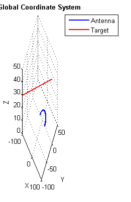
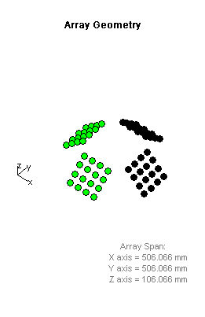
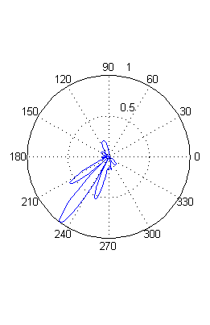
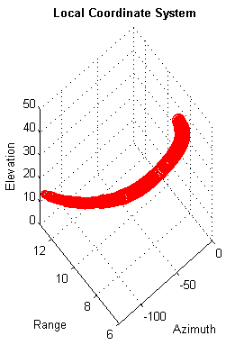

Contents
% Copyright 2013 The MathWorks, Inc
Beamforming Example
This example shows how to model antenna and target motion, and monitor array sidelobes while beamforming.
Model
A 4-panel, ground based antenna array is mounted on a vehicle moving on a circular path at constant speed.
fc = 3e9; sAnt = lowProfileArray('FrequencyRange',[2/3*fc 4/3*fc],'ViewArray',false); [sSAnt, sSAntPlat]= splitSubArrays(sAnt); for i=1:4, sCol{i} = phased.Collector('Sensor',sSAnt{i},'OperatingFrequency',fc); sBF{i} = phased.PhaseShiftBeamformer('OperatingFrequency',fc,... 'SensorArray',sSAnt{i},'DirectionSource','Input port',... 'WeightsOutputPort',true); %#ok<*SAGROW> sResp{i} = phased.ArrayResponse('SensorArray',sSAnt{i},'WeightsInputPort',true); end % A target is flying over the array. sTgtMotion = phased.Platform('InitialPosition',[10e4; 0; 5e4],... 'Velocity',[-400; -200; -40]); s=sin(2*pi*5*(0:.01:1))'; % Target Echo
Simulate
N = 500; scanAz = -180:180; for ii=1:N [AzEl,face,antpos,tgtpos,range] = updatePos(sSAntPlat,sTgtMotion,1/N,ii); viewTrajectories % Visualize trajectories y = []; resp = []; chan = 0; for k=find(face), x = step(sCol{k},s,AzEl); % Collect signal noise = 0.01*(randn(size(x))); % Add noise chan = chan + 1; [y(:,chan),w] = step(sBF{k},x+noise,AzEl); % Beamform ang = [scanAz;ones(size(scanAz))*AzEl(2)]; resp(:,chan) = step(sResp{k},fc,ang,w); % Array response end y = mean(y,2); % Combine active array outputs resp = mean(resp,2); plotBeam % Visualize array response end   